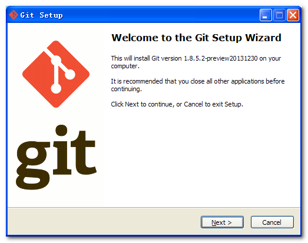
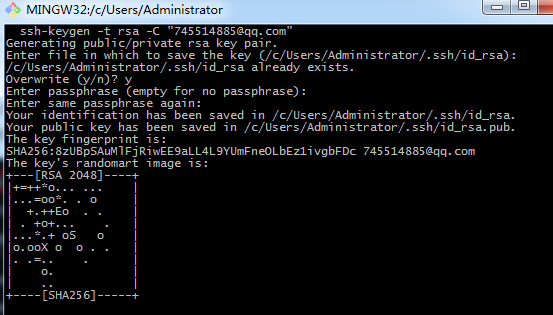
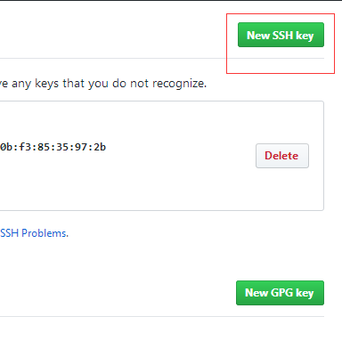
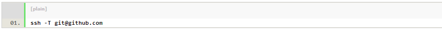
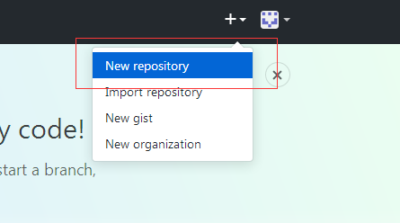

Github的安装
各个平台安装包下载地址: https://git-scm.com/downloads
安装Git客户端
欢迎界面：直接下一步

协议：必须接受

安装位置：预留100M空间, 自定义安装位置
选择安装组件：也可以默认选择
开始菜单快捷方式目录：设置开始菜单中快捷方式的目录名称, 也可以选择不再开始菜单中创建快捷方式
设置环境变量：选择使用什么样的命令行工具, 一般情况下我们默认使用Git Bash即可, 默认选择
选择换行格式
开始安装
安装结束
创建本地ssh
使用命令：创建本地ssh

GitHub邮箱：该命令后面的邮箱就是GitHub的注册邮箱
路径选择 ：使用该命令之后, 会出现提示选择ssh-key生成路径, 这里直接点回车默认即可, 生成的ssh-key在默认路径中

将ssh配置到GitHub中
进入生成的ssh目录 ：C:\Documents and Settings\Administrator\.ssh 中, 使用记事本打开 id_rsa.pub 文件, 将该文件中的内容复制
id_rsa.pub 文件内容

进入GitHub网站：登录GitHub, 选择 Setting 用户设置

选择 SSH and GPG keys

点击右侧的 New SSH key

将上面复制好的ssh-key复制进去

验证是否成功：使用命令

如果出现 Hi 745514885 You've successfully authenticated, but GitHub does not provide shell access. 就说明配置成功, 可以连接上GitHub
配置本地用户和邮箱
用户名邮箱作用 ：我们需要设置一个用户名 和 邮箱, 这是用来上传本地仓库到GitHub中, 在GitHub中显示代码上传者
使用命令

创建远程仓库


完成以上操作就可以上传项目到Git了
步骤如下：
1:先打开项目文件夹,右键打开git Bash Here
2:输入命令。切换到文件夹右键显示隐藏文件看看是否有.git的文件。有就说明成功了
3:上传的操作如下
上传完成之后你就会发现你的目录多了一个 README.md 文件
如何像访问网站一样输入网址就进入访问你的页面呢？步骤如下：
选中master branch Save保存

保存之后你就会看到已经可以根据网址输入访问了
现在我就访问我这个项目的MyDemo.html页面：https://745514885.github.io/Demo/MyDemo.html